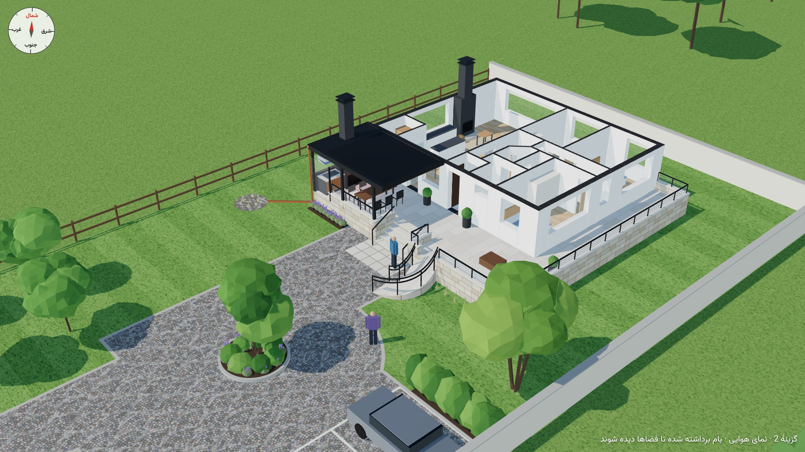
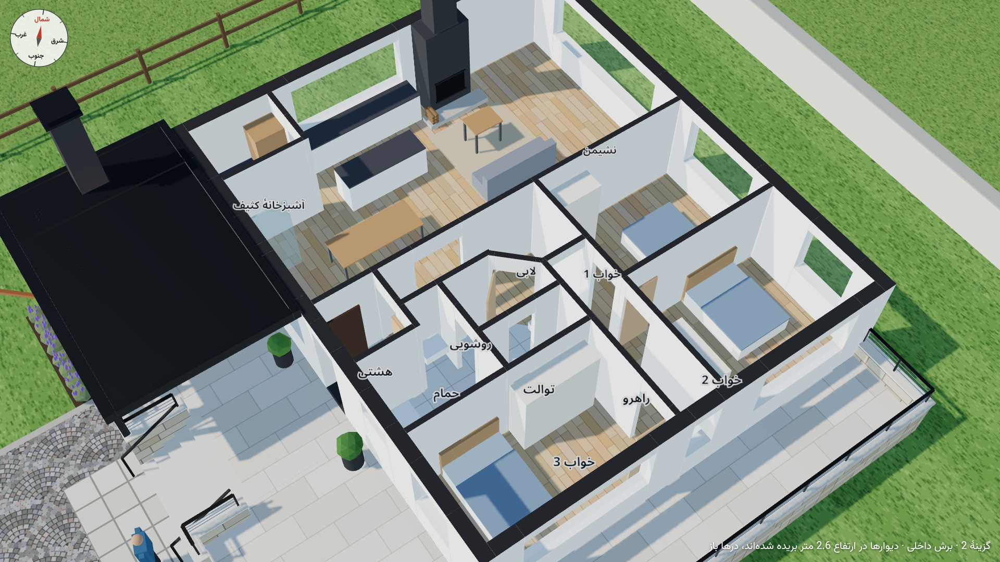

این طرح اولیه است، نه نقشهٔ اجرایی. شکل فضاها، مبلمان و سازهها تقریبیاند و باید معمار و مهندس محلی آنها را طراحی و تأیید کنند.
بزرگنمایی نقشهها: هر دو نقشه با مقیاس 1:100 کشیده شدهاند (در چاپ با بزرگنمایی 100%: پلان روی A3 و محوطه روی A2) و روی صفحه هم همیشه هممقیاساند.
پلان طبقه
جدول مساحتها
| شماره | فضا | مترمربع |
|---|---|---|
| 1 | نشیمن، ناهارخوری و آشپزخانهٔ باز | 46.8 |
| 2 | آشپزخانهٔ کثیف و انبار مواد غذایی | 3.0 |
| 3 | هشتی ورودی (جاکفشی و جالباسی) | 2.0 |
| 4 | لابی ورودی، باز به راهروی خوابها | 4.5 |
| 6 | راهروی اتاقخوابها | 4.1 |
| 7 | سرویس بهداشتی (توالت ایرانی و فرنگی) | 1.6 |
| 8 | حمام (دوش، وان و روشویی) | 4.2 |
| 9 | پیشورودی سرویسها و روشویی | 2.1 |
| 10 | اتاق خواب 1 | 11.3 |
| 11 | اتاق خواب 2 | 11.6 |
| 12 | اتاق خواب 3 | 10.8 |
| جمع مساحت مفید فضاها | 102.0 | |
| زیربنای ناخالص با دیوارها | 120.0 |
نشیمن و آشپزخانهٔ باز: 46.8 مترمربع. اتاقخوابها: 11.3، 11.6 و 10.8 مترمربع. مساحتها با دیوار بیرونی 30 و دیوار داخلی 12 سانتیمتری حساب شدهاند؛ مبلمان، فاصلهٔ بازشوی درها و جزئیات دیوار هنوز کنترل نشدهاند.
چیدمان و ویژگیها
نشیمن عریض با عمق 5.4 متر سراسر ضلع شمالغربی را گرفته است. سرویسها مستقیم از لابی باز میشوند و لابی بدون در به راهروی باریک اتاقخوابها راه دارد: اتاقخوابهای 1 و 2 در ضلع شمالشرقیاند و اتاقخواب 3 کنار سرویسها. دیوار مشترک اتاقخواب 3 و توالت با کمد دیواری از صدا جدا شده است. انباری جداگانهای در کار نیست و توالت و پیشورودی سرویسها پنجره ندارند، پس هواکش مکانیکی لازم دارند. حمام فقط یک پنجرهٔ کوچک بالا (کف آن 1.8 متر از کف اتاق) برای نور و تهویه دارد و پنجرهٔ دید ضلع جنوبغربی به اتاقخواب 3 رفته است؛ تخت اتاقخواب 3 به دیوار حمام تکیه دارد، پس این دیوار عایق صدا لازم دارد. شومینهٔ هیزمی نشیمن با جلوی شیشهای و سکوی سنگی روی دیوار شمالغربی است و دودکش آن حدود 1.1 متر از بام بالاتر میرود.
از تراس جلو (رو به مزرعه، جنوبغربی) درِ اصلی به هشتی و بعد به لابی میرسد. لابی یک درِ شیشهای کشویی به نشیمن دارد و یک گذر باز به راهروی خواب؛ پس مهمان از اتاقخوابها رد نمیشود و خانواده هم بدون عبور از نشیمن به اتاقها میرسد. نشیمن فقط یک درِ شیشهای به تراس دارد تا مهمانها بدون عبور از ورودی اصلی به تراس و باربیکیو بروند؛ کنار آن یک پنجرهٔ معمولی است. درِ آشپزخانهٔ کثیف به تراس هم فقط برای سرویسدهی است. آشپزخانهٔ کثیف کوچک (حدود 2.0 در 1.6 متر) فقط برای سرخکردنیهای سنگین است و قفسههای انبار برای مواد غذایی، شیشهها و سیبزمینی دارد؛ پنجره ندارد، پس هود کانالدار و هواکش لازم است. درِ آن رو به ردیف کابینت آشپزخانه و شومینه باز میشود.
یک ورودی مشترک به پیشورودی سرویسها با روشویی میرسد و از آنجا درهای جدا به حمام و توالت باز میشوند. حمام هم دوش دارد و هم وان. توالت ایرانی و فرنگی هر دو در یک فضا جا شدهاند. ورودی سرویسها از لابی است، پیش از راهروی خواب، پس مهمان از جلوی درِ اتاقخوابها رد نمیشود. اتاق رختشویی حذف شده است.
بین لابی و راهروی خواب در نیست؛ برای حریم خصوصی میشود پرده یا بعداً دری گذاشت. دید و بازشوی درها را با معمار کنترل کنید؛ این نقشه بهتنهایی حریم کامل را وقتی درها باز است ثابت نمیکند.
تراسها و اقلیم
تراس جلو 4 متر عمق دارد و حدود 80 سانتیمتر از زمین بالاتر است. فقط نیمهٔ باربیکیو و نشیمنگاه آن پرگولای بیوکلیماتیک دارد: تیغههای آلومینیومی موتوری که بسته شوند سقفی آببند میسازند و آب باران از ناودان پنهان در قاب به دو لولهٔ مسی در گوشههای شمالغربی و از آنجا با لولهای روی زمین به یک باغچهٔ سنگریزهای باران در حیاط میرود؛ جلوی درِ اصلی و تراس آفتاب زمستان بدون سقف میمانند. شومینهٔ هیزمی روی دیوار شمالغربی و دور از درِ اصلی است. هود و دودکش باربیکیو باید درست طراحی شوند و باد غالب و بارانهای اریب در محل بررسی شوند. گزارش باد و سایبان فقط ورودی اولیهٔ طراحی است و ابعاد تراس آن باید با این چیدمان تطبیق داده شود.
نشیمن بیشتر رو به جنوبغرب و شمالغرب است، نه جنوبشرق. شیشههای جنوبغربی برای آفتاب کمارتفاع عصر سایبان قابل تنظیم لازم دارند. نور زمستان و گرمای تابستان را با شرایط محلی و طراحی پنجرهها بسنجید.
کنترلهای معمار و مهندس
- فاصلهٔ لازم برای توالت، دوش، مبلمان و بازشوی درهای لولایی و کشویی، تهویه و لولهکشی کنترل شود؛ توالت دوکاسه، حمام، هشتی و عرض راهروها بهویژه تنگاند.
- نشیمن بدون ستون با سیستم سازهای که مهندس محلی طراحی میکند (نه ابعاد تیر از پیش تعیینشده)؛ بار زلزله و باد، آبروی بام، عایق، پی و فاصلهٔ ایمن شومینه و دودکش بررسی شود.
- بامتراس یا اتاق اضافه در آینده فقط یک مرحلهٔ احتمالی است و طراحی یا تأیید نشده؛ بار و مجوز آن را از همین حالا در نظر بگیرید. دسترسی به بام طراحی نشده است.
- در زمین 44 در 24 متری، دیوارهای بیرونی خانه 5 متر با مرزهای شمالغربی و شمالشرقی فاصله دارند و تراس آفتاب زمستان 5.1 متر با مرز جنوبشرقی؛ ضوابط محلی عقبنشینی، تراس، پیشآمدگی بام، سایبان و زیربنای مجاز را پیش از جانمایی بپرسید.
- زیربنای خانه دقیقاً 120 مترمربع است و هیچ حاشیهای ندارد؛ نقشهبرداری، ضخامت دیوارها و اینکه فضاهای سرپوشیدهٔ بیرونی جزو زیربنا حساب میشوند یا نه، تأیید شود.
نقشهٔ محوطه
ماشین از درِ ورودی 4 متری (1) در وسط مرز جنوبغربی وارد میشود. راه ماشینرو 3.5 متری (3) به دوربرگردانی به قطر 10.6 متر (4) دور یک جزیرهٔ کوچک درخت میرسد: ماشین خلاف عقربههای ساعت دور میزند، مسافر را روی سکوی سنگی پای پلهٔ وسط تراس و پای رمپ پیاده میکند (تراس حدود 80 سانتیمتر بالاتر از حیاط است)، و بعد از لاین شمالی و راه ماشینرو برمیگردد یا وارد راهروی پارکینگ (5) میشود. بیشتر ماشینها یکباره دور میزنند؛ ون بزرگ شاید یک دندهعقب کوتاه لازم داشته باشد. پارکینگ (2) چهار جای پارک 5 متری کنار مرز جنوبشرقی، بین درِ ورودی و خانه است (جای 4 با عرض 3.5 متر راحتتر است) و ماشینی که از در میآید میتواند مستقیم به راهروی پارکینگ بپیچد (6). یک پرچین و چمن حائل حدود 6 متری با یک درخت ماشینها را از تراس دور نگه میدارد؛ آدمها از جای پارک روی سنگفرش تا سکوی پیاده شدن میروند. از جای پارک تا درِ خانه، از پله یا رمپ، حدود 20 تا 28 متر است. رمپ کوتاه و خمیدهای کنار پله، به طول حدود 3 متر و با دستانداز در هر دو طرف، از سنگفرش به تراس میرسد. شیبش حدود 27 درصد و تند است: برای کالسکه و چرخدستی مناسب است، ولی سالمند شاید کمک لازم داشته باشد و ویلچر رمپ خیلی بلندتری میخواهد (1 به 12، حدود 10 متر). لاین جنوبی دوربرگردان همان راهروی 6 متری پارکینگ است.
پارکینگ، مرزها، مسیر آفتاب و منظرهها نمایشیاند؛ با نقشهبرداری محل تأیید شوند.
تصویر سهبعدی
فقط مطالعهٔ حجمی است (تصاویر سهبعدی پرسپکتیو هستند و مقیاس ندارند): بام تخت مدرن، سفیدکاری، روکش چوبی، پنجرههای آلومینیومی تیره، سنگفرش گرانیتی بادبزنی برای راه ماشینرو، کف سرامیک یا سنگ روشن برای تراس (در تابستان خنکتر از چوب)، جانپناه سنگی 45 سانتیمتری با پایههای باریک فولادی مشکی و میلههای استیل، و پرگولای بیوکلیماتیک (تیغههای گردان آلومینیومی، در حالت بسته ضدباران) روی نیمهٔ باربیکیو. قد آدمها 1.75 متر است تا اندازهها حس شوند. در نمای هوایی و برش، بام برداشته شده و دیوارها در ارتفاع 2.6 متر بریده شدهاند تا فضاها و درهای باز دیده شوند. نمای سهبعدی تعاملی (به اینترنت برای three.js نیاز دارد).

